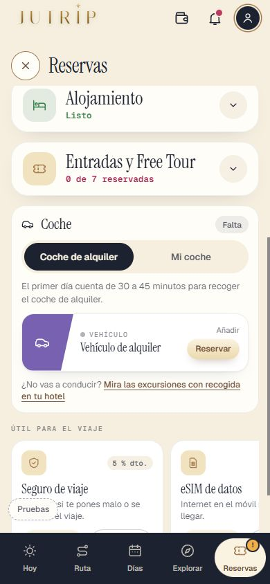
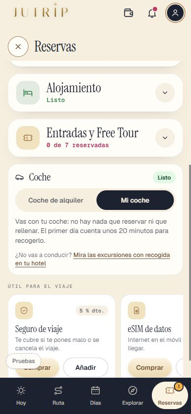
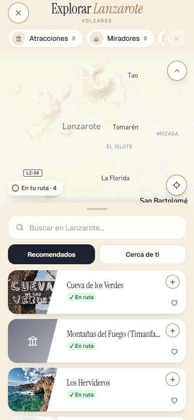
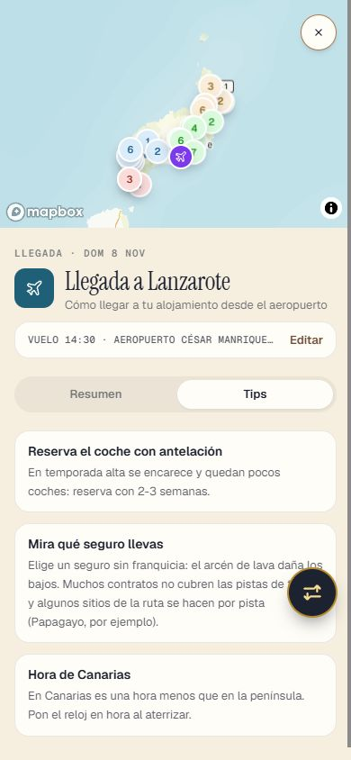
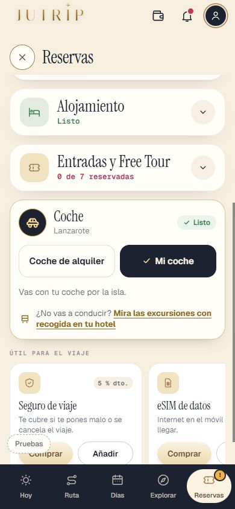

Lanzarote: lo que falta para usarla en tu viaje (fichas, dónde aparcar, el coche en RESERVAS, Cerca de ti, EXPLORAR y los textos de Roma). Sigue OCULTO (solo administrador); Roma no cambia. Marca cada punto en tu teléfono cuando lo hayas comprobado (se guarda en este navegador). Abajo, la tabla de aparcamientos para que revises los textos.
LZ2b-1 (agente A, 4-nov-2026). Para el REPASO. Cierre del 4-nov: los 14 sitios con verificar=true que se podían comprobar se han mirado en Google Maps (vista de satélite, sin cuenta, cookies rechazadas); el de los Helechos no aparece en Google y sigue sin comprobar. Antes: Mapbox Search Box (categoría parking), los 147 de OpenStreetMap de la LZ1 y Mapbox Directions. tamano = lo que se ve en satélite; gratis_o_pago solo dice «gratis» si Google lo dice («Aparcamiento gratuito») o si es una pista/calle sin infraestructura. Los marcados con ⚠️ siguen sin comprobar: su texto no se enseña al viajero hasta que lo mires en tu viaje.
| Sitio | Aparcamiento | Gratis o de pago | De dónde sale | Texto nuevo |
| Jameos del Agua | Aparcamiento Jameos del Agua, a 75 m de la coordenada anterior | sin dato (los centros del CACT dicen tener aparcamiento propio) | Mapbox Search Box (categoría parking, 4-nov-2026) | Aparcamiento junto a la entrada. |
| Jardín de Cactus (Guatiza) | Parking Jardín de Cactus, a 54 m | sin dato | OpenStreetMap (los 147 aparcamientos de la LZ1) | Aparcamiento junto a la entrada. |
| Los Hervideros | Aparcamiento para Los Hervideros, a 98 m de la coordenada anterior | sin dato | Mapbox Search Box (categoría parking, 4-nov-2026) | Aparcamiento junto a los miradores, al lado de la carretera LZ-703. |
| Salinas de Janubio (mirador) | Aparcamiento Mirador Salinas de Janubio, a 18 m (la coordenada ya estaba bien) | sin dato | Mapbox Search Box (categoría parking, 4-nov-2026) | Aparcamiento del mirador, junto a la carretera. |
| Casa-Museo del Campesino (Mozaga) | Casa Museo del Campesino Parking, a 59 m (y el de OpenStreetMap, a 83 m) | sin dato | Mapbox Search Box (categoría parking, 4-nov-2026) + OpenStreetMap | Aparcamiento junto a la casa. |
| Mirador del Bosquecillo (Risco de Famara) | Aparcamiento El Bosquecillo, a 118 m (en la pista, junto al mirador) | sin dato | Mapbox Search Box (categoría parking, 4-nov-2026) + OpenStreetMap (dos «Mirador del Bosquecillo» a 110-141 m) | Al final de la pista de tierra, junto al mirador. |
| Castillo de San José (MIAC) | Aparcamiento en el Castillo de San José, a 68 m | sin dato | Mapbox Search Box (categoría parking, 4-nov-2026) | Aparcamiento junto al castillo. |
| LagOmar (Nazaret) | Aparcamiento del Museo LagOmar, a 61 m (y «Museo Lagomar parking», a 50 m) | sin dato | Mapbox Search Box (categoría parking, 4-nov-2026) | Aparcamiento propio del museo, junto a la entrada. |
| Teguise (villa, aparcamiento a la entrada del pueblo) | 4 aparcamientos a 150-205 m del centro («Parking Teguise» y tres «Aparcamiento»; OpenStreetMap: uno a 246 m, 8 plazas) | sin dato (lo de «gratis» y lo del domingo vienen de DATOS_NATURALEZA, sin comprobar) | Mapbox Search Box (categoría parking, 4-nov-2026) + OpenStreetMap | Aparcamientos gratis a la entrada del pueblo. Entre semana se aparca también cerca del centro; el domingo se llenan pronto. |
| Punta Mujeres y Arrieta (espigón de Arrieta) | «Aparcamiento Gratuito Punta Mujeres» y «Estacionamiento Gratuito Arrieta»; en OpenStreetMap, 12 a 32 plazas a 85-117 m | gratis (así se llaman los dos en Mapbox) | Mapbox Search Box (categoría parking, 4-nov-2026) + OpenStreetMap | Aparcamiento gratis en cada pueblo, cerca del mar. |
| Arrecife: Charco de San Ginés y el paseo | Garaje Único (350 m), Parking Hubara (496 m), plazas libres a 489 m; nada pegado al Charco | sin dato (garajes de pago y calle) | Mapbox Search Box (categoría parking, 4-nov-2026) | Es ciudad: hay aparcamientos y garajes a 350-500 m del Charco; busca uno cerca del paseo. |
| Puerto del Carmen (Puerto Viejo) | «Aparcamiento» a 4 m y «Aparcamientos El Pueblo» a 195 m | sin dato | Mapbox Search Box (categoría parking, 4-nov-2026) | Aparcamiento junto al Puerto Viejo (hay otro a unos 200 m: Aparcamientos El Pueblo). |
| Puerto de Playa Blanca (ferry a Corralejo) | «Aparcamiento para Las Brisas», a 12 m del puerto (y Playa Blanca 24h El Correíllo, a 157 m) | sin dato | Mapbox Search Box (categoría parking, 4-nov-2026) | |
| Aeropuerto de Lanzarote (ACE, T1) | Parking P2 a 31 m (aparcamiento del aeropuerto) | de pago (aeropuerto) | Mapbox Search Box (categoría parking, 4-nov-2026) | |
| Cueva de los Verdes | Aparcamiento grande en círculo junto a la entrada (lavabos y CACT), con decenas de coches | sin dato (no se ve barrera ni caseta de cobro) | Google Maps, vista de satélite (4-nov-2026) | Aparcamiento grande junto a la entrada. |
| La Geria y sus bodegas (parada en Stratvs) | Explanada asfaltada de la bodega Stratvs, junto a la LZ-30 | sin dato (aparcamiento de bodega) | Google Maps, vista de satélite (4-nov-2026) | Aparcamiento pequeño de la bodega Stratvs, junto a la LZ-30. No pares en el arcén. |
| Caletón Blanco (LZ-1 km 30, Órzola) | NO hay aparcamiento marcado: pista de tierra desde la LZ-1 hasta la arena; se deja el coche al final | gratis (sin infraestructura) | Google Maps, vista de satélite (4-nov-2026) | Sin aparcamiento marcado: pista de tierra desde la LZ-1 hasta la arena; se deja el coche al final. |
| Playa de Montaña Bermeja (LZ-703) | «Parking montaña Bermeja», pin de Google a pie de la LZ-703 | gratis (Google: «Aparcamiento gratuito») | Google Maps, vista de satélite (4-nov-2026) | Aparcamiento gratuito pequeño junto a la carretera LZ-703, al lado de la playa. |
| Castillo de Santa Bárbara (volcán Guanapay) | NO hay aparcamiento marcado: la carretera sube hasta el pie del castillo y acaba en un ensanche | gratis (sin infraestructura) | Google Maps, vista de satélite (4-nov-2026) | Sin aparcamiento marcado: la carretera sube hasta el pie del castillo y se deja el coche en el ensanche del final, con poco sitio. |
| Ciudad Estratificada (Rofera de Teseguite, LZ-404) | NO hay aparcamiento marcado: explanada de tierra junto a la LZ-404, al pie de la antigua rofera | gratis (sin infraestructura) | Google Maps, vista de satélite (4-nov-2026) | Sin aparcamiento marcado: explanada de tierra junto a la LZ-404, al pie de la antigua rofera. |
| Las Grietas (Montaña Blanca, LZ-35) | NO hay aparcamiento oficial: se ven coches aparcados en la franja de tierra junto a la LZ-35 | gratis (sin infraestructura) | Google Maps, vista de satélite (4-nov-2026) | Sin aparcamiento oficial: se deja el coche en la franja de tierra junto a la LZ-35. Cabe poco: no pares en la calzada. |
| Haría y la Casa-Museo César Manrique | NO hay aparcamiento propio: calles del pueblo (calle Elvira Sánchez) junto a la Casa-Museo | gratis (calle) | Google Maps, vista de satélite (4-nov-2026) | Sin aparcamiento propio: se aparca en las calles del pueblo, junto a la Casa-Museo (calle Elvira Sánchez). |
| Mirador de los Helechos (valle de las Mil Palmeras) ⚠️ | ninguno comprobado | sin dato | Mapbox Search Box + OpenStreetMap: nada (Google Maps no se ha mirado) | Aparcamiento junto al mirador, en la carretera de Teguise a Haría. |
| Mirador de Haría (Malpaso) | Curva en herradura junto al mirador (Google lo marca «Cerrado temporalmente») | sin dato | Google Maps, vista de satélite (4-nov-2026) | Aparcamiento pequeño en la curva, junto al mirador. Prohibido dejar el coche en el arcén. |
| Mirador de Guinate | Final de la calle La Majadita, junto al mirador (el parque Guinate Tropical queda a unos 150 m) | sin dato | Google Maps, vista de satélite (4-nov-2026) | Al final de la calle La Majadita, apartadero pequeño junto al mirador. |
| Ermita de las Nieves | NO hay aparcamiento marcado: el coche se deja junto a la ermita, al borde de la pista de tierra | gratis (sin infraestructura) | Google Maps, vista de satélite (4-nov-2026) | Sin aparcamiento marcado: se deja el coche junto a la ermita, al borde de la pista de tierra. |
| Caleta de Famara y Playa de Famara | NO se ve aparcamiento propio en satélite: calles del pueblo (el pin «P» de la entrada es una parada de guagua) | gratis (calle) | Google Maps, vista de satélite (4-nov-2026) | Sin aparcamiento propio a la vista: se aparca en las calles del pueblo. |
| Playa Blanca (paseo marítimo) | Centro: solo calle. Aparcamientos públicos en Marina Rubicón («Parking Público» y «Parking Marina Rubicón») a poco más de 1 km; un «Private Parking Lot» al oeste | sin dato | Google Maps, vista de satélite (4-nov-2026) | En el centro se aparca en la calle; los aparcamientos públicos están en Marina Rubicón, a poco más de 1 km del paseo. |
| Volcán del Cuervo (aparcamiento junto a la LZ-56) | «Parking Sendero Volcán del Cuervo», al oeste de la LZ-56, con unos 20-30 coches en satélite | gratis (Google: «Aparcamiento gratuito») | Google Maps, vista de satélite (4-nov-2026) | Aparcamiento gratuito mediano junto a la LZ-56, al pie del sendero. Desde noviembre de 2026 está previsto aparcar en Mancha Blanca y subir en la guagua del parque (línea P3). |




